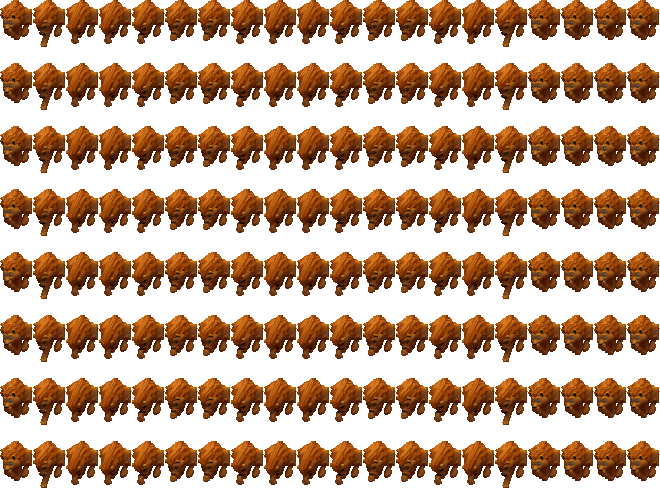
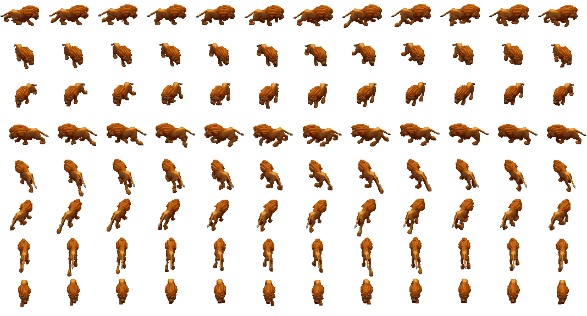

Tribe25 lions (Lions)Type / job ID49Animation job ID49Native nameadult_animalEnglishAnimalSex / ageadultNative allowedTrueParent chain (baseatomics)[49, 48]Confidence{"sourceMapping": "SOURCE_COMPLETE", "framePixels": "PIXEL_CONFIRMED (per frame; see Catalogs/pixel_validation.csv)", "palette": "SOURCE_BODY_PALETTE", "shadow": "Coverage mask only; native destination darkening -> PRESENTATION_APPROXIMATION", "timing": "Native frame order and selection rules recorded; tick-to-seconds rate UNKNOWN"}Native references{"Game.exe": ["0x0048BD66 GraphicsAnimationRegistry_LoadFromCif", "0x0048CEA1 BobSeq global lookup", "0x00494AE6 frame selection", "0x004803D5 creation binding/palette", "0x00480576 job-change rebinding", "0x0048B258 random palette patches", "0x0049B930 shadow destination darkening"], "cpp": "MobileSpriteRegistry / MobileSpriteRuntimeOwner / ProductionWorldCompositor"}
Graphics bindings
| phase | section | inherited from | body variants (selector: body / shadow) | head variants | palettes | random palettes |
|---|---|---|---|---|---|---|
| initial | 45 | 0: CR_Ani_Body_00 / CR_Ani_Body_00_s atlas | LION01 |
Animations
Sheets: one row per native direction (0..7, only directions with frames), columns in native frame-list order, shared anchor. Colours use the declared base palette; runtime RNG palette ordinal, player colour and random patches are not applied (PRESENTATION_APPROXIMATION). Shadow masks are kind-2 coverage DATA.
atomic 2 animal_lion_male_adult_idle | BobSeq animal_lion_male_walk | section 753 | mode 0 | length 100
frame = min(count-1, floor(count*progress/duration)); duration from atomic length


direction frame lists (BOB ids)
[{"direction": 0, "bodyBobs": [2290], "headBobs": [2290], "status": null}, {"direction": 1, "bodyBobs": [2301], "headBobs": [2301], "status": null}, {"direction": 2, "bodyBobs": [2247], "headBobs": [2247], "status": null}, {"direction": 3, "bodyBobs": [2261], "headBobs": [2261], "status": null}, {"direction": 4, "bodyBobs": [2270], "headBobs": [2270], "status": null}, {"direction": 5, "bodyBobs": [2280], "headBobs": [2280], "status": null}, {"direction": 6, "bodyBobs": [2326], "headBobs": [2326], "status": null}, {"direction": 7, "bodyBobs": [2312], "headBobs": [2312], "status": null}]atomic 3 animal_lion_male_adult_idle | BobSeq animal_lion_male_walk | section 746 | mode 0 | length 100
frame = min(count-1, floor(count*progress/duration)); duration from atomic length


direction frame lists (BOB ids)
[{"direction": 0, "bodyBobs": [2290], "headBobs": [2290], "status": null}, {"direction": 1, "bodyBobs": [2301], "headBobs": [2301], "status": null}, {"direction": 2, "bodyBobs": [2247], "headBobs": [2247], "status": null}, {"direction": 3, "bodyBobs": [2261], "headBobs": [2261], "status": null}, {"direction": 4, "bodyBobs": [2270], "headBobs": [2270], "status": null}, {"direction": 5, "bodyBobs": [2280], "headBobs": [2280], "status": null}, {"direction": 6, "bodyBobs": [2326], "headBobs": [2326], "status": null}, {"direction": 7, "bodyBobs": [2312], "headBobs": [2312], "status": null}]atomic 4 animal_lion_male_adult_idle | BobSeq animal_lion_male_walk | section 747 | mode 0 | length 100
frame = min(count-1, floor(count*progress/duration)); duration from atomic length


direction frame lists (BOB ids)
[{"direction": 0, "bodyBobs": [2290], "headBobs": [2290], "status": null}, {"direction": 1, "bodyBobs": [2301], "headBobs": [2301], "status": null}, {"direction": 2, "bodyBobs": [2247], "headBobs": [2247], "status": null}, {"direction": 3, "bodyBobs": [2261], "headBobs": [2261], "status": null}, {"direction": 4, "bodyBobs": [2270], "headBobs": [2270], "status": null}, {"direction": 5, "bodyBobs": [2280], "headBobs": [2280], "status": null}, {"direction": 6, "bodyBobs": [2326], "headBobs": [2326], "status": null}, {"direction": 7, "bodyBobs": [2312], "headBobs": [2312], "status": null}]atomic 5 animal_lion_male_adult_idle | BobSeq animal_lion_male_walk | section 748 | mode 0 | length 100
frame = min(count-1, floor(count*progress/duration)); duration from atomic length


direction frame lists (BOB ids)
[{"direction": 0, "bodyBobs": [2290], "headBobs": [2290], "status": null}, {"direction": 1, "bodyBobs": [2301], "headBobs": [2301], "status": null}, {"direction": 2, "bodyBobs": [2247], "headBobs": [2247], "status": null}, {"direction": 3, "bodyBobs": [2261], "headBobs": [2261], "status": null}, {"direction": 4, "bodyBobs": [2270], "headBobs": [2270], "status": null}, {"direction": 5, "bodyBobs": [2280], "headBobs": [2280], "status": null}, {"direction": 6, "bodyBobs": [2326], "headBobs": [2326], "status": null}, {"direction": 7, "bodyBobs": [2312], "headBobs": [2312], "status": null}]atomic 6 animal_lion_male_adult_idle | BobSeq animal_lion_male_walk | section 749 | mode 0 | length 100
frame = min(count-1, floor(count*progress/duration)); duration from atomic length


direction frame lists (BOB ids)
[{"direction": 0, "bodyBobs": [2290], "headBobs": [2290], "status": null}, {"direction": 1, "bodyBobs": [2301], "headBobs": [2301], "status": null}, {"direction": 2, "bodyBobs": [2247], "headBobs": [2247], "status": null}, {"direction": 3, "bodyBobs": [2261], "headBobs": [2261], "status": null}, {"direction": 4, "bodyBobs": [2270], "headBobs": [2270], "status": null}, {"direction": 5, "bodyBobs": [2280], "headBobs": [2280], "status": null}, {"direction": 6, "bodyBobs": [2326], "headBobs": [2326], "status": null}, {"direction": 7, "bodyBobs": [2312], "headBobs": [2312], "status": null}]atomic 7 animal_lion_male_adult_idle | BobSeq animal_lion_male_walk | section 750 | mode 0 | length 100
frame = min(count-1, floor(count*progress/duration)); duration from atomic length


direction frame lists (BOB ids)
[{"direction": 0, "bodyBobs": [2290], "headBobs": [2290], "status": null}, {"direction": 1, "bodyBobs": [2301], "headBobs": [2301], "status": null}, {"direction": 2, "bodyBobs": [2247], "headBobs": [2247], "status": null}, {"direction": 3, "bodyBobs": [2261], "headBobs": [2261], "status": null}, {"direction": 4, "bodyBobs": [2270], "headBobs": [2270], "status": null}, {"direction": 5, "bodyBobs": [2280], "headBobs": [2280], "status": null}, {"direction": 6, "bodyBobs": [2326], "headBobs": [2326], "status": null}, {"direction": 7, "bodyBobs": [2312], "headBobs": [2312], "status": null}]atomic 9 animal_bear_eat | BobSeq animal_lion_male_wait_clean | section 752 | mode 0 | length 20
frame = min(count-1, floor(count*progress/duration)); duration from atomic length



direction frame lists (BOB ids)
[{"direction": 0, "bodyBobs": [2149, 2150, 2151, 2151, 2152, 2153, 2153, 2152, 2151, 2151, 2152, 2153, 2153, 2152, 2151, 2150, 2149, 2149, 2149, 2149], "headBobs": [2149, 2150, 2151, 2151, 2152, 2153, 2153, 2152, 2151, 2151, 2152, 2153, 2153, 2152, 2151, 2150, 2149, 2149, 2149, 2149], "status": null}, {"direction": 1, "bodyBobs": [2149, 2150, 2151, 2151, 2152, 2153, 2153, 2152, 2151, 2151, 2152, 2153, 2153, 2152, 2151, 2150, 2149, 2149, 2149, 2149], "headBobs": [2149, 2150, 2151, 2151, 2152, 2153, 2153, 2152, 2151, 2151, 2152, 2153, 2153, 2152, 2151, 2150, 2149, 2149, 2149, 2149], "status": null}, {"direction": 2, "bodyBobs": [2149, 2150, 2151, 2151, 2152, 2153, 2153, 2152, 2151, 2151, 2152, 2153, 2153, 2152, 2151, 2150, 2149, 2149, 2149, 2149], "headBobs": [2149, 2150, 2151, 2151, 2152, 2153, 2153, 2152, 2151, 2151, 2152, 2153, 2153, 2152, 2151, 2150, 2149, 2149, 2149, 2149], "status": null}, {"direction": 3, "bodyBobs": [2149, 2150, 2151, 2151, 2152, 2153, 2153, 2152, 2151, 2151, 2152, 2153, 2153, 2152, 2151, 2150, 2149, 2149, 2149, 2149], "headBobs": [2149, 2150, 2151, 2151, 2152, 2153, 2153, 2152, 2151, 2151, 2152, 2153, 2153, 2152, 2151, 2150, 2149, 2149, 2149, 2149], "status": null}, {"direction": 4, "bodyBobs": [2149, 2150, 2151, 2151, 2152, 2153, 2153, 2152, 2151, 2151, 2152, 2153, 2153, 2152, 2151, 2150, 2149, 2149, 2149, 2149], "headBobs": [2149, 2150, 2151, 2151, 2152, 2153, 2153, 2152, 2151, 2151, 2152, 2153, 2153, 2152, 2151, 2150, 2149, 2149, 2149, 2149], "status": null}, {"direction": 5, "bodyBobs": [2149, 2150, 2151, 2151, 2152, 2153, 2153, 2152, 2151, 2151, 2152, 2153, 2153, 2152, 2151, 2150, 2149, 2149, 2149, 2149], "headBobs": [2149, 2150, 2151, 2151, 2152, 2153, 2153, 2152, 2151, 2151, 2152, 2153, 2153, 2152, 2151, 2150, 2149, 2149, 2149, 2149], "status": null}, {"direction": 6, "bodyBobs": [2149, 2150, 2151, 2151, 2152, 2153, 2153, 2152, 2151, 2151, 2152, 2153, 2153, 2152, 2151, 2150, 2149, 2149, 2149, 2149], "headBobs": [2149, 2150, 2151, 2151, 2152, 2153, 2153, 2152, 2151, 2151, 2152, 2153, 2153, 2152, 2151, 2150, 2149, 2149, 2149, 2149], "status": null}, {"direction": 7, "bodyBobs": [2149, 2150, 2151, 2151, 2152, 2153, 2153, 2152, 2151, 2151, 2152, 2153, 2153, 2152, 2151, 2150, 2149, 2149, 2149, 2149], "headBobs": [2149, 2150, 2151, 2151, 2152, 2153, 2153, 2152, 2151, 2151, 2152, 2153, 2153, 2152, 2151, 2150, 2149, 2149, 2149, 2149], "status": null}]atomic 81 animal_lion_male_attack | BobSeq animal_lion_male_attack | section 751 | mode 0 | length 25
frame = min(count-1, floor(count*progress/duration)); duration from atomic length


direction frame lists (BOB ids)
[{"direction": 0, "bodyBobs": [1969, 1969, 1969, 1970, 1971, 1971, 1971, 1972, 1973, 1974, 1975, 1976, 1977, 1978, 1979, 1980, 1981, 1982, 1983, 1984, 1985, 1985, 1985, 1969, 1969], "headBobs": [1969, 1969, 1969, 1970, 1971, 1971, 1971, 1972, 1973, 1974, 1975, 1976, 1977, 1978, 1979, 1980, 1981, 1982, 1983, 1984, 1985, 1985, 1985, 1969, 1969], "status": null}, {"direction": 1, "bodyBobs": [1986, 1986, 1986, 1987, 1988, 1988, 1988, 1989, 1990, 1991, 1992, 1993, 1994, 1995, 1996, 1997, 1998, 1999, 2000, 2001, 2002, 2002, 2002, 1986, 1986], "headBobs": [1986, 1986, 1986, 1987, 1988, 1988, 1988, 1989, 1990, 1991, 1992, 1993, 1994, 1995, 1996, 1997, 1998, 1999, 2000, 2001, 2002, 2002, 2002, 1986, 1986], "status": null}, {"direction": 2, "bodyBobs": [1901, 1901, 1901, 1902, 1903, 1903, 1903, 1904, 1905, 1906, 1907, 1908, 1909, 1910, 1911, 1912, 1913, 1914, 1915, 1916, 1917, 1917, 1917, 1901, 1901], "headBobs": [1901, 1901, 1901, 1902, 1903, 1903, 1903, 1904, 1905, 1906, 1907, 1908, 1909, 1910, 1911, 1912, 1913, 1914, 1915, 1916, 1917, 1917, 1917, 1901, 1901], "status": null}, {"direction": 3, "bodyBobs": [1918, 1918, 1918, 1919, 1920, 1920, 1920, 1921, 1922, 1923, 1924, 1925, 1926, 1927, 1928, 1929, 1930, 1931, 1932, 1933, 1934, 1934, 1934, 1918, 1918], "headBobs": [1918, 1918, 1918, 1919, 1920, 1920, 1920, 1921, 1922, 1923, 1924, 1925, 1926, 1927, 1928, 1929, 1930, 1931, 1932, 1933, 1934, 1934, 1934, 1918, 1918], "status": null}, {"direction": 4, "bodyBobs": [1935, 1935, 1935, 1936, 1937, 1937, 1937, 1938, 1939, 1940, 1941, 1942, 1943, 1944, 1945, 1946, 1947, 1948, 1949, 1950, 1951, 1951, 1951, 1935, 1935], "headBobs": [1935, 1935, 1935, 1936, 1937, 1937, 1937, 1938, 1939, 1940, 1941, 1942, 1943, 1944, 1945, 1946, 1947, 1948, 1949, 1950, 1951, 1951, 1951, 1935, 1935], "status": null}, {"direction": 5, "bodyBobs": [1952, 1952, 1952, 1953, 1954, 1954, 1954, 1955, 1956, 1957, 1958, 1959, 1960, 1961, 1962, 1963, 1964, 1965, 1966, 1967, 1968, 1968, 1968, 1952, 1952], "headBobs": [1952, 1952, 1952, 1953, 1954, 1954, 1954, 1955, 1956, 1957, 1958, 1959, 1960, 1961, 1962, 1963, 1964, 1965, 1966, 1967, 1968, 1968, 1968, 1952, 1952], "status": null}, {"direction": 6, "bodyBobs": [2020, 2020, 2020, 2021, 2022, 2022, 2022, 2023, 2024, 2025, 2026, 2027, 2028, 2029, 2030, 2031, 2032, 2033, 2034, 2035, 2036, 2036, 2036, 2020, 2020], "headBobs": [2020, 2020, 2020, 2021, 2022, 2022, 2022, 2023, 2024, 2025, 2026, 2027, 2028, 2029, 2030, 2031, 2032, 2033, 2034, 2035, 2036, 2036, 2036, 2020, 2020], "status": null}, {"direction": 7, "bodyBobs": [2003, 2003, 2003, 2004, 2005, 2005, 2005, 2006, 2007, 2008, 2009, 2010, 2011, 2012, 2013, 2014, 2015, 2016, 2017, 2018, 2019, 2019, 2019, 2003, 2003], "headBobs": [2003, 2003, 2003, 2004, 2005, 2005, 2005, 2006, 2007, 2008, 2009, 2010, 2011, 2012, 2013, 2014, 2015, 2016, 2017, 2018, 2019, 2019, 2019, 2003, 2003], "status": null}]walk 0 walk | BobSeq animal_lion_male_walk | section 1523 | mode 0 | length None
frame = frameTick % count (walk; caller frame tick)



direction frame lists (BOB ids)
[{"direction": 0, "bodyBobs": [2287, 2288, 2289, 2290, 2291, 2292, 2293, 2294, 2295, 2296, 2297, 2298], "headBobs": [2287, 2288, 2289, 2290, 2291, 2292, 2293, 2294, 2295, 2296, 2297, 2298], "status": null}, {"direction": 1, "bodyBobs": [2299, 2300, 2301, 2302, 2303, 2304, 2305, 2306, 2307, 2308, 2309, 2310], "headBobs": [2299, 2300, 2301, 2302, 2303, 2304, 2305, 2306, 2307, 2308, 2309, 2310], "status": null}, {"direction": 2, "bodyBobs": [2239, 2240, 2241, 2242, 2243, 2244, 2245, 2246, 2247, 2248, 2249, 2250], "headBobs": [2239, 2240, 2241, 2242, 2243, 2244, 2245, 2246, 2247, 2248, 2249, 2250], "status": null}, {"direction": 3, "bodyBobs": [2251, 2252, 2253, 2254, 2255, 2256, 2257, 2258, 2259, 2260, 2261, 2262], "headBobs": [2251, 2252, 2253, 2254, 2255, 2256, 2257, 2258, 2259, 2260, 2261, 2262], "status": null}, {"direction": 4, "bodyBobs": [2263, 2264, 2265, 2266, 2267, 2268, 2269, 2270, 2271, 2272, 2273, 2274], "headBobs": [2263, 2264, 2265, 2266, 2267, 2268, 2269, 2270, 2271, 2272, 2273, 2274], "status": null}, {"direction": 5, "bodyBobs": [2275, 2276, 2277, 2278, 2279, 2280, 2281, 2282, 2283, 2284, 2285, 2286], "headBobs": [2275, 2276, 2277, 2278, 2279, 2280, 2281, 2282, 2283, 2284, 2285, 2286], "status": null}, {"direction": 6, "bodyBobs": [2323, 2324, 2325, 2326, 2327, 2328, 2329, 2330, 2331, 2332, 2333, 2334], "headBobs": [2323, 2324, 2325, 2326, 2327, 2328, 2329, 2330, 2331, 2332, 2333, 2334], "status": null}, {"direction": 7, "bodyBobs": [2311, 2312, 2313, 2314, 2315, 2316, 2317, 2318, 2319, 2320, 2321, 2322], "headBobs": [2311, 2312, 2313, 2314, 2315, 2316, 2317, 2318, 2319, 2320, 2321, 2322], "status": null}]